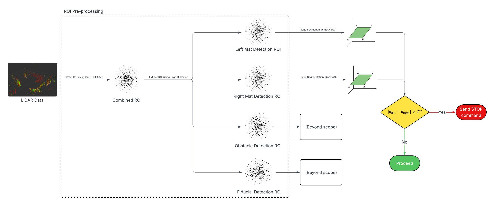

Devin Pham
I work at the intersection of robotics and machine learning, where I focus on building perception systems that help autonomous mobile robots understand and interact with the world around them. I also develop full-stack web applications that interface with robots to enable real-time monitoring, control, and visualization of their behavior and data.
If you are interested in my work, feel free to reach out to me!

Projects
Advancing robotics through the power of data science
Robotics
Camera-Based Human Tracking and Following Algorithm for Mobile Robots
Developed a camera-based human tracking pipeline to enable the safe and efficient relocation of airport robots. This algorithm detects and tracks human movement in real time using Ultralytic's YOLOv11 model and a 3D depth camera to create a dynamic path plan.
ROS Python HTML JS OpenCV Gazebo Computer Vision Deep Learning YOLO HRI CUDA
Cloud-Hosted Fleet Monitoring and Control App for Mobile Robots
Built a comprehensive cloud-based platform for real-time fleet monitoring, control, and analytics with web and mobile interfaces.
React Node.js AWS LiDAR-Based Detection of Planar Surfaces for Robotic Process Monitoring
Developed a LiDAR-based system for detecting and analyzing planar surfaces in industrial environments to enable precise robotic process monitoring and quality control.
ROS Python C++ LiDAR Point Cloud PCL RANSAC Industrial Automation
Camera-Based Lane Detection Algorithm for Autonomous Vehicles
Implemented a robust lane detection system using computer vision techniques to identify road lanes and provide navigation guidance for autonomous vehicle systems.
Python OpenCV Computer Vision Edge Detection Hough Transform Autonomous Vehicles Machine LearningCurriculum Vitae
Education, Experience & Skills
Overview
Work
Robotics Engineer Intern
Company Name
Worked on developing perception and planning systems for autonomous mobile robots in warehouse environments.
- Implemented multi-robot coordination algorithms
- Optimized path planning performance by 40%
- Deployed solutions on fleet of 20+ robots
Research Assistant - Robotics Lab
University of California, San Diego
Conducted research on learning-based control methods for underactuated systems.
- Published 2 papers in major robotics conferences
- Developed novel MPC algorithms for quadrotor control
- Mentored 3 undergraduate students
Education
Bachelor of Science in Data Science
University of California, San Diego
Focus on machine Learning and artificial intelligence. Senior project on "Deep Learning in Autonomous Vehicles"
- Programming & Data Structures
- Probability & Statistics
- Data Management
- Robotics
Technical Skills
Programming Languages
Python, C++, MATLAB, Julia, JavaScript
Frameworks & Tools
ROS/ROS2, PyTorch, TensorFlow, OpenCV, PCL, Gazebo, MuJoCo, Git
Core Competencies
Control Theory, Optimization, Machine Learning, Computer Vision, Path Planning, SLAM, Reinforcement Learning